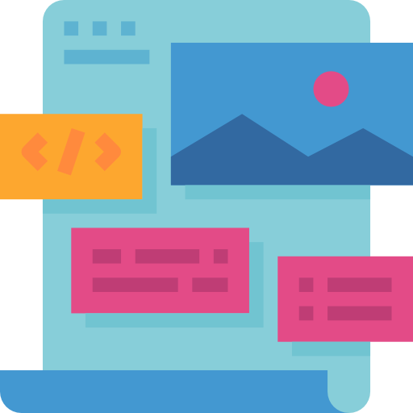

- Communication
Plan de communication fictif pour le SDIS44
Lors d'un projet étudiant fictif, nous avons dûs avec Thomas Devaux-Lequint réaliser un plan de communication pour le SDIS 44, notre projet avait pour vocation de répondre au problème fictif de recrutement de sapeurs-pompiers professionnels au sein du département.
Voir
 Wireframe
Wireframe-  Maquette
 Adobe XD
Adobe XD
- Wireframe
- Maquette
- Adobe XD
- HTML/CSS/JS
 GSAP
GSAP
Création de ce Portfolio
J'ai eu comme projet pour un de mes cours de concevoir et implémenter 2 pages de ce site, une fois le projet rendu et évalué par l'intervenant, j'ai décidé de garder ce portfolio en ligne, et de continuer à le développer en incluant les pages "portfolio" et "compétences".
Voir- Wireframe
- Maquette
- Adobe XD
 Wordpress
Wordpress PHP
PHP
Refonte site de l'office de tourisme d'Angers
Dans le cadre de mes études, j'ai dû fictivement faire une refonte du site de l'office de tourisme d'Angers sur Wordpress. J'ai d'abord élaboré la maquette sur Adobe XD puis reproduit cette dernière sur Wordpress en créant un thème en php pour faciliter l'intégration des éléments de ma maquette.
Voir